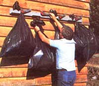
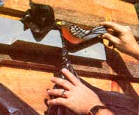
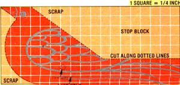

Trash cans-though functional-are quite expensive, and aren't attractive by any stretch of the imagination. On the other hand, though, a can-free back yard will all too often be one that's scattered with litter rooted from unprotected garbage bags.
Of course, the simplest way to do without garbage cans and avoid having to clean your lawn constantly is to place the plastic bundles where dogs and other rubbish-marauders can't reach them . . . and this decorative bag holder-made from an 8-foot-long 2 X 4 and some simple hardware-makes a handy temporary perch for the "poly pokes" while they await their trip to the dump.
The device is no more than a piece of lumber that supports a series of clamps fashioned to look like robins. Once this bird brigade is mounted high on a wall, post, or fence, you'll find that it's a cinch to close the ends of the plastic sacks with knots or ties, then slip each bag's neck between a redbreast's bill and the stop beneath it. The weight of the bundle pulls the bird's camshaped chest even closer to the stop, thus tightening the clamp's grip on the pouch.
To make the most efficient use of our lumber, we first cut a 32" section from the 8-foot board, then-upscaling the pattern included in this article to actual size-we traced four sets of cutting lines onto the face of this plank, edge to edge. A bit of handwork with a coping saw then allowed us to separate the four birds from the stops leaving behind a minimum of scrap.
Assembling the plastic-sack sling called for little more than fastening the wedgeshaped stops to the 64" backboard with 6-penny common nails (these blocks should be mounted flush with the board's lower edge and about 8-1/2 inches apart), and mounting the robins between the stops using 1/4" X 3" carriage bolts. To assure that the birds are positioned correctly, it'd be a good idea to place each one's lower beak and neck squarely against the upper right corner of its respective stop, then drill the 1/4" hole 3 inches to the right of this union and approximately 1-1/2 inches below the top edge of the backboard. The exit side of these carriage bolt holes should then be enlarged to 1", and countersunk 3/8 inch to allow the nut-and-washer combinations to be recessed.
Once everything's been sized and bored to fit, the birds should be separated from their perch for painting. The backboard and stops can remain one solid color, but you'll probably want to give the robins red breasts, yellow beaks, and black wing and eye outlines ... using our photos and illustration as a guide. (Remember, too, that the bolt heads should be touched up to match the warblers' "plumage".)
Your new trash harness will hang just about anywhere with the help of a few 1/4" X 2-1/2" lag screws or 10-penny nails, but do be sure you mount it high enough to be effective. And, even if you don't care to replace your garbage cans with the device, you'll find that its sturdy wooden clips are useful for holding leaf bags, ropes, gunnysacks, and more!
|
 |
 |
 |